not on my sidewalk!
Methodology, framework, analysis, and experiments in glitching — a study of scaffolding infrastructure in Central Harlem.
aqila bakri
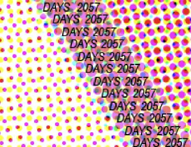
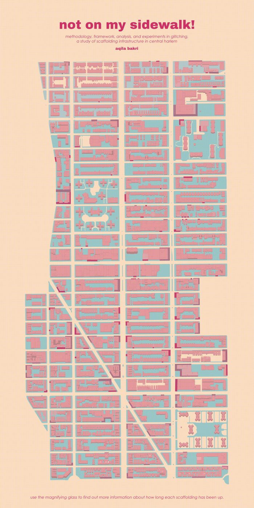
Glitched click to revealprecedent study: trash track (2009)
Researchers at the MIT Senseable Lab tracked the movement of trash in Seattle by attaching GSM cellular chips to waste items.
Emphasis on human-centered as well as open and crowdsourced methodology by relying on volunteers as Seattle residents. The research aimed to visualize and better understand the infrastructure systems that often remain invisible.
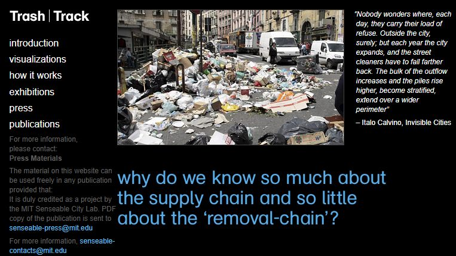
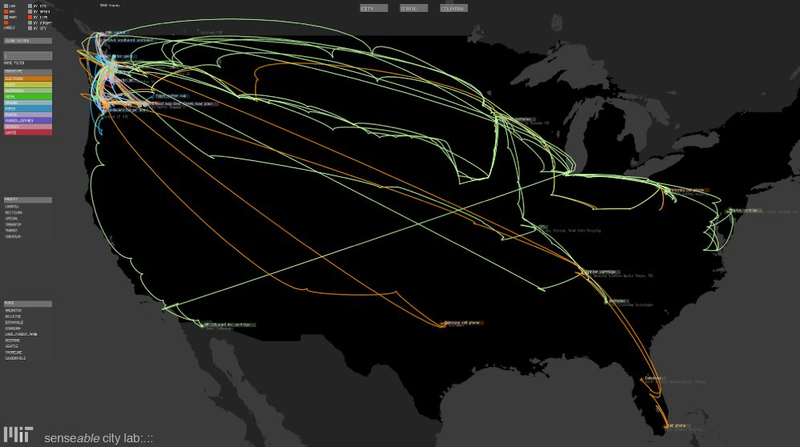
methodology: infrastructure as information
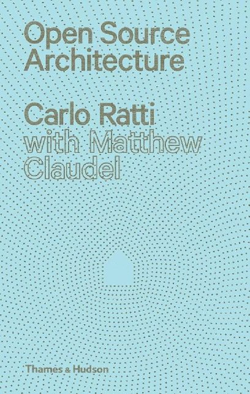
"Open-source architecture is presented as an innovation, but it is really just the vernacular with an Internet connection. Local design fueled by a global community."
"The history of human habitation is an untold epic of anonymous architecture: the nameless vernacular is a cultural expression of man's need, not only for shelter, but also for status, identity, and delight."
"Dismantle the boundaries imposed by commercial, authorial architecture, and prove the validity of informal design."
"Information deficits — a lack of information can lead to a lack of accountability, which can obscure pollution sources and cloak questionable practices."
"The most profound technologies are those that disappear. They weave themselves into the fabric of everyday life until they are indistinguishable from it." — Weiser, 1991
"How do informal collectors read the urban environment, how do they find material, and which parameters inform their spatial decisions?"
"Urban planning literature concerned with infrastructure often still ignores the close entanglement of people and artifacts in urban services, conceptualizing the city exclusively as a product of abstract social, political, and economic forces."
methodology: glitching / crash as a system of reveal
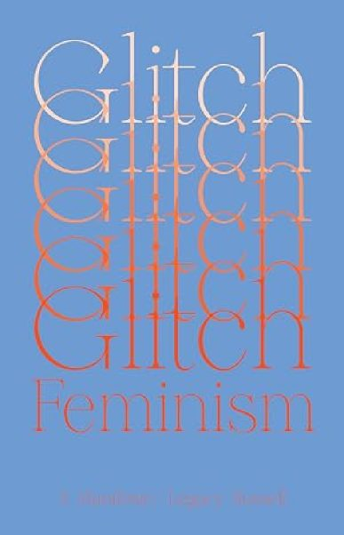
"We inject our positive irregularities into these systems as errata, activating new architecture through these malfunctions."
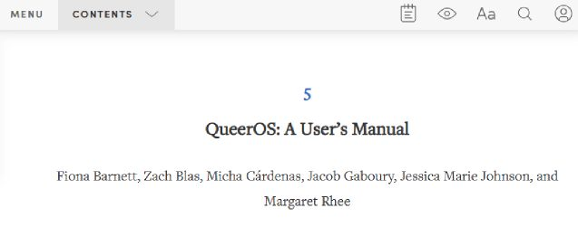
"QueerOS thereby embraces uncertainty. It welcomes crashes."
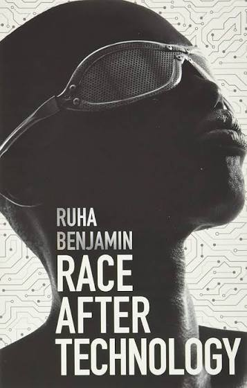
"Perhaps in that case glitches are not spurious, but rather a kind of signal of how the system operates. Not an aberration but a form of evidence, illuminating underlying flaws in a corrupted system."
keywords
research question
How can glitching serve as a methodology for revealing invisible infrastructures, making urban systems more legible, and fostering more participatory and open approaches to urbanism?
experiment — observation
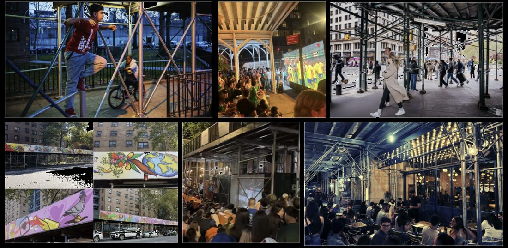
Scaffolding has evolved from a temporary structure into a semi-permanent piece of urban infrastructure. Because of inefficiencies in the system, it has begun to function as an unintended extension of public space.
experiment — mapping
The mapping exercises revealed that Central Harlem is one of the community districts with both the highest average scaffolding age and one of the largest concentrations of scaffolding in the city.
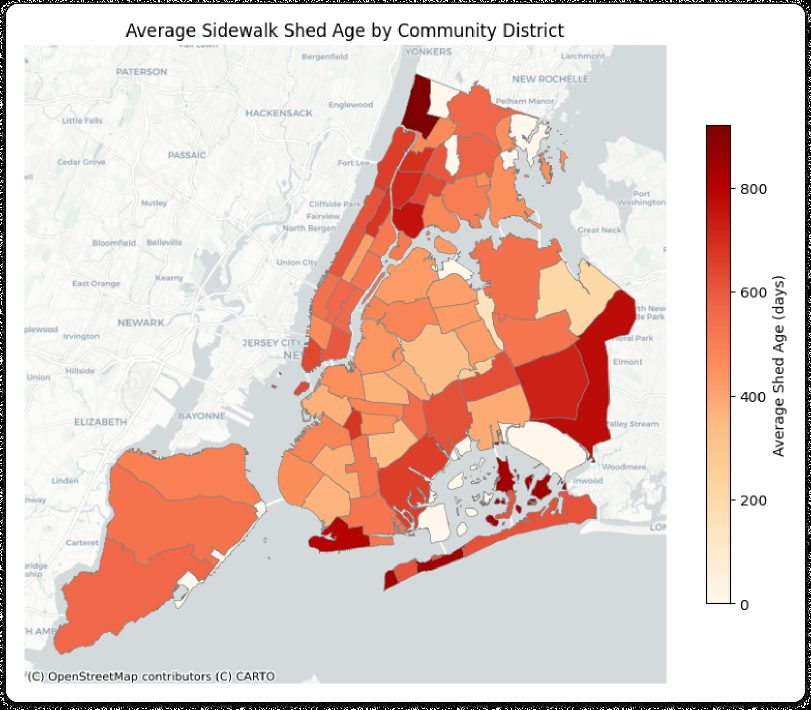
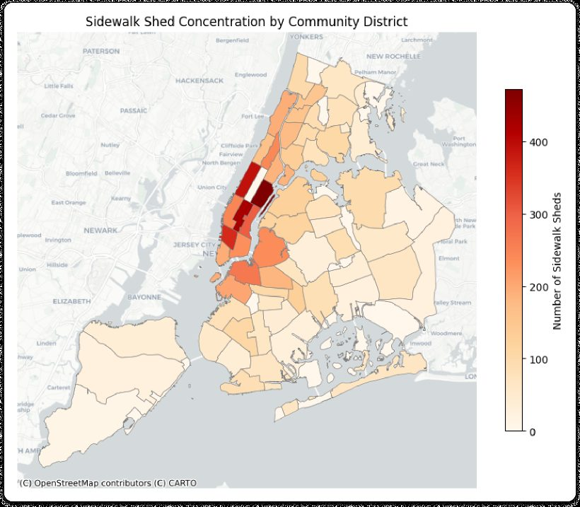
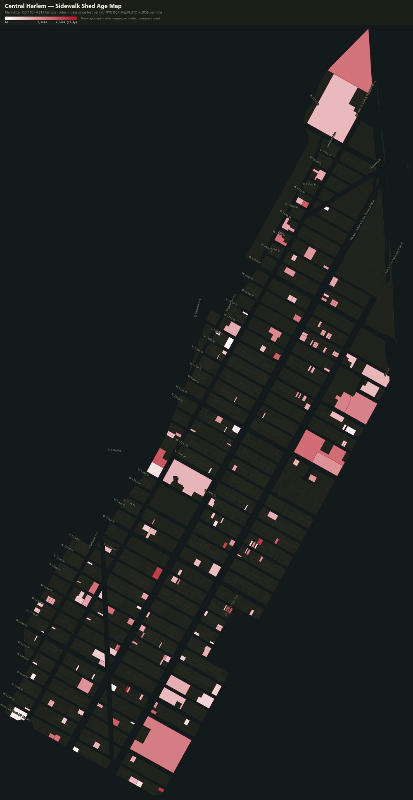
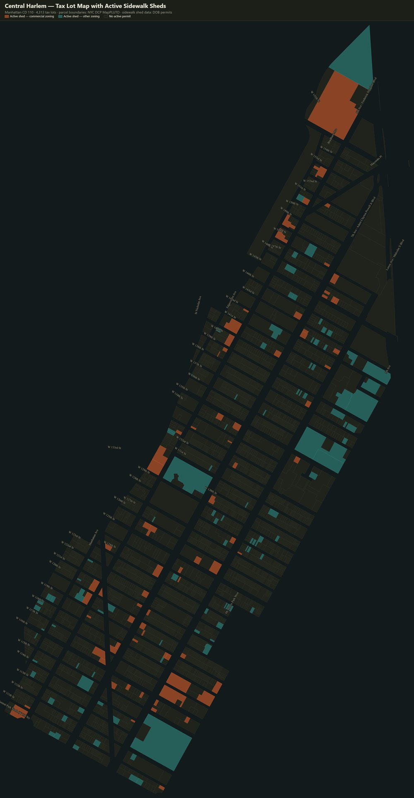
experiment — visual glitch
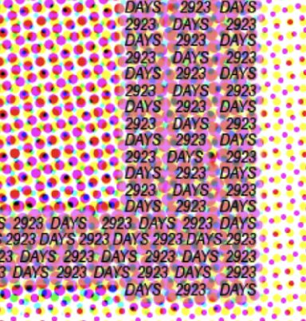
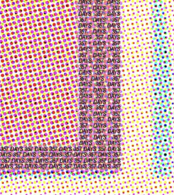
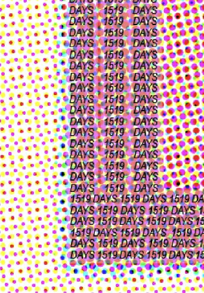
experiment — alternative prototype
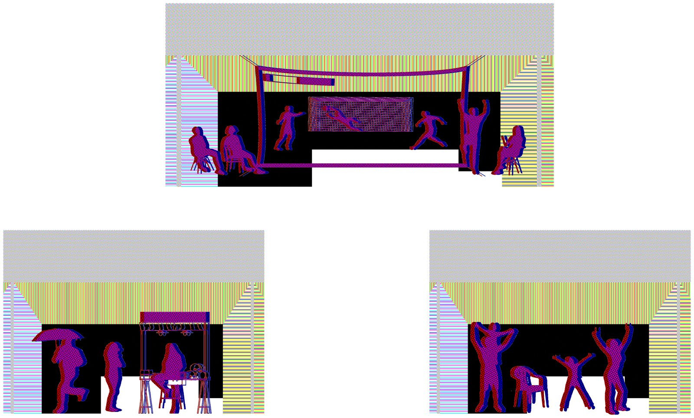
Spatial and social glitch as an approach to an alternative prototype.